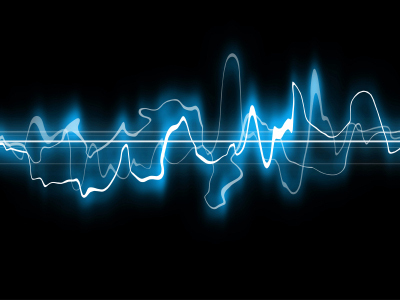

audio.org
多媒体数据库与应用第二章 课件
Table of Contents
1 TODO 关于计算机音乐的一些讨论
1.1 TODO 什么才算是计算机音乐及其应用前景？ @问题
声波 (wave)

声波是一个连续的模拟信号
有的人把电脑音乐看成只是在荧幕前写谱….转换成乐器演奏
现代电脑技术处理的是数字化的信息,电脑音乐的特点之一正是声音的数字化,数字 化的声音极大提高了音响效果的保真度,丰富了音乐的表现力,使音乐的音响质量出现了 一 个 飞 跃。 广义的电脑音乐是指:凡是在创作、演奏、制作与传播过程中使用电脑技术或设备的音 乐。即:只要音乐与电脑技术或设备相联系,就有电脑音乐的成分。
狭义的电脑音乐概念是指通过电脑编程控制 MIDI 乐器完成音乐作品的创作与制作 。
从音乐制作的角度来看,它是以电子电脑为控制中心、 MIDI 技术为控制语言、以合成器等电 子乐器为音频终端的数字音频系统。也就是我们常说的“电脑音乐制作系统”。
过去,没有电脑音乐这一名称,最早的电脑音乐可以说是电子音乐,它是 使用电子元件制造出来。它利用振荡电路产生不同波形,经过放大后形成声音,不同的波形 变化产生不同的音色。所以它当时还停留在对声音的创造与变化的实验阶段,而这十年的发 展也主要是伴随着多媒体的的发展而前进,在专业音乐领域中,在专业音乐中并没有形成 一个真正的,实用的风格体系和强大的影响力。
从作品的创作过程看,一名电脑音乐制作人可以独立操作一套设备完成作曲、配器、演 奏、 录音合成的全过程,大大缩短了音乐创作的周期_
- 权威的定义 计算机音乐是指以计算机为主控核心的系统产生的音乐。 该系统主要包括四要素，即计算机、音乐软件、MIDI接口和电子乐器（合成器等）。 计算机音乐从80年代初兴起，它的发展主要得益于MIDI和音乐软件的出现。 目前，权威的音乐论坛：中国原创音乐联盟说过这个概念 是指通过电脑编程控制 MIDI 乐器完成音乐作品的创作与制作
- 其他定义 无论是服务于社会音乐生活、服务于教育体系、还是服务于音乐研究， 只要是通过计算机或类似的方法制作出来的音乐，统称为计算机音乐。
1.2 TODO 什么是midi?如何使用midi制作音乐
现在越来越多的年轻人开始对MIDI制作感兴趣，特别是随着电脑的高速发展， 原来离普通人很遥远的专业设备可以用软件代替，这无疑是音乐爱好者的福音， 体验一下自己当音乐制作人的乐趣吧！
那么什么是MIDI呢？MIDI是英语Music Instrument Digital Interface 的缩写， 翻译过来就是“数字化乐器接口”，也就是说它的真正涵义是一个供不同设备进行信号传输的接口的名称。 我们如今的MIDI音乐制作全都要靠这个接口，在这个接口之间传送的信息也就叫MIDI信息。
MIDI音乐的制作过程中始终离不开三件“法宝”：音源，音序器。输入设备。 通俗地说，音源就是一个装了很多音色的东西，我们要听到音乐就必须靠它提供音色， 不同的音源能提供不同的音色，当然就有好有坏，有高档和低档了。采样器实际上也是音源的一种， 只不过它的音色不是固定的，而是来自于各类采样盘或是您的亲手劳动――自己采样。 音序器的任务就是记录下人的旨意，实际上就是记录了音乐的基本要素――速度，节奏，音色，音符的时值等等， 这样在播放的过程中，音序器就会根据其内容指挥音源在什么时候用什么音色发多长的音， 这样我们就能听到一首动听的歌曲了。
这套MIDI标准协议，这就是我们常说的"GM标准"(Gerneral MIDI)。
音序器的内容也得要人来告诉它呀！为了符合我们原有的演奏习惯， 人们制造了许多基于传统乐器的MIDI输入设备，如MIDI键盘， MIDI吉它，MIDI 吹管，MIDI小提琴等，我们可以按照演奏传统乐器的方法去演奏它们， 而我们的演奏则通过MIDI OUT出口传送到音序器，被记录为音序内容。 所以可以说MIDI文件的内容实际上就是音序内容，它只是一堆数字而已， 大家如果在Cakewalk 这样的软件中打开Event list 所看到的东西就是MIDI音乐的内容了。 因为MIDI文件不是以描述声音的波形为其记录形式的， 所以同样的一个MIDI文件在不同的音源上播放效果会完全不一样， 因为声音是靠音源发出的，而不同的声卡波表或硬件的音源音色都不一样
1.3 TODO 思考用计算机把wave转成可视乐谱的可能性Lavande @问题
计算机音乐是用计算机作曲, 看看midi音乐制作什么的, 直接在电脑上写谱，然后自动转成音乐, 其实就是逆向，但是要复杂一点，不是从midi音乐逆向，而是从录音棚里录制的那种混音过的音乐来逆向。。
因为MIDI程序内通常采用16进制编码，再自动转换为2进制进行工作 简单的，一个例如mp3文件吧，通过某种方法，分析频谱，然后自动生成五线谱或者简谱。。
P 声波 通过计算机 直接转换成 五线谱的
1.4 TODO 常见 无损 格式的数字音频? @问题
1.4.1 数字音频格式种类
数字音频格式种类繁多,但总体上可以分成两大类——有损数字音频格式和无损数字音频格式。由 于人耳只能感知模拟的声波信号,所以任何数字音频在回放时都要通过相应的解码器解码,将数字信号 转化为模拟的声波信号,人类才能欣赏。有损数字音频格式指原始声波信号通过该格式进行数字采样、 编码压缩后产生的数字音频通过解码器解码后,不能 100% 再现进行数字采样后得到的声波信号;反之, 无损数字音频格式格式的数字音频解码后能够 100% 再现进行数字采样后得到的声波信号。
1.4.2 mp3 wma，有损
1.4.3 wav ?
1.4.4 Free Lossless Audio Codec, FLAC(无损)
FLAC 无损音频压缩编码,是一套著名的自由音频压缩编码,其特点是无损压缩,它不会破坏任何原有 的音频信息,由于其压缩比较高(压缩 CD 音频可以达到 50%压缩率)、编解码算法复杂度较低以及对 解码硬件要求也较低,因此出现了不少支持 FLAC 格式的便携式音频播放器。
1.4.5 Monkey 's Audio(无损)
Monkey's Audio 是一种常见的无损音频压缩编码格式,在中国也比较流行,很多地方都能下载到该 格式的音频文件,其文件名后缀通常为 ape。Monkey's Audio 压缩比相对 FLAC 较高,约在 55% 上下,但是编解码的算法比 FLAC 复杂,因此对于便携式音频播放器的硬件要求较高,目前只有少量便 携式音频 设备支持 Monkey's Audio 格式音频的回放。
1.5 TODO 如何获取高品质数字音频文件?
- Sound Juicer 2.28.1 音乐炸汁机 如果您有很多高品质 CD,可以选择 DIY,自己压缩高品质数字音频,具体方 法我就不在这里赘述了,想学习的请留言。现在的大部分人应该都会选择下载 免费数字音频,下载的地方我想地球人都知道吧— —VeryCD 的音乐板块,一般 来说一些精品音乐资源,都会有 MP3、FLAC、APE 的三种版本供选择和下载。
- goldwave是一个功能强大的数字音乐编辑器，它可以对音频内容进行播放、录制、编辑以及转换格式等处理。